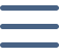
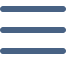
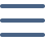
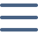

Información de HTML
Es el lenguaje de marcado utilizado para la creación de páginas web. Se encarga de estructurar el contenido mediante etiquetas que definen elementos como encabezados, párrafos, imágenes, enlaces, tablas y más.

Información de JavaScript
Es un lenguaje de programación y una tecnología fundamental de la World Wide Web, junto con HTML y CSS. El noventa y nueve por ciento de los sitios web utilizan JavaScript en el lado del cliente para el comportamiento de las páginas web. Los navegadores web tienen un motor JavaScript dedicado que ejecuta el código del cliente.
.png)
Información de Framework
Ofrece una estructura base que los programadores pueden complementar o modificar según sus objetivos . El uso de frameworks permite, principalmente, agilizar procesos de desarrollo porque podemos reutilizar herramientas o módulos: ya tienes el 'esqueleto' sobre el que trabajar.
Información de Java css
Es un lenguaje de hojas de estilo que se utiliza para especificar la presentación y el estilo de un documento escrito en un lenguaje de marcado como HTML o XML (incluidos los dialectos XML como SVG, MathML o XHTML). CSS es una tecnología fundamental de la World Wide Web, junto con HTML y JavaScript.